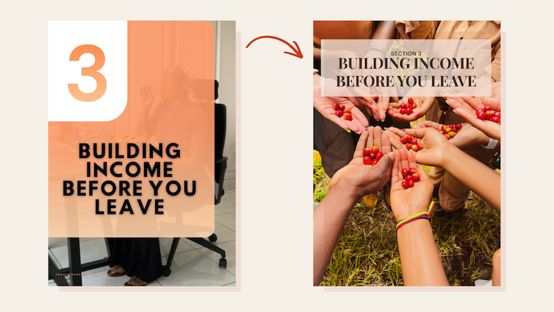

Travel Guide

Content Design | Client project | 3 weeks | 2026
Editorial and content design for The Guide To Leave, a six-section, 70-page digital guide by travel influencer and digital nomad Renata.
Scope
Audit the raw draft, rebuild the structure to make the content easy to scan, protect client’s voice through every rewrite, and design a repeatable system for reference-heavy content without inventing anything Renata hadn't lived.
Problem
👉 The guide's original form didn't match what its audience expected: a polished, credible product worth paying for.
The raw draft had real voice and real lived experience, but the visual structure was inconsistent and the content structure didn't hold together. Some sections didn't tie back to the guide's overarching narrative. That gap, between what the guide promised and how it actually looked and read, undercut its credibility before a reader even got to the advice inside.

Strategy
Step 1: Research
Examples of the questions I asked during a discovery call:
- What countries have you been to? For how long, and what did you do there?
- What is your goal for this guide?
- Who is your audience?
Asking Renata about the countries she'd actually been to, instead of relying only on the guide's original content, uncovered a gap that threatened the guide's core premise. The guide asks readers to trust Renata's lived experience, so adding four countries was essential, both for her credibility as the author and for the guide's value.
Step 2: Visual Strategy
I built a visual system first: a four-color palette pulled directly from the guide's own title-page photography, a type system chosen for readability, and a wireframed set of page types. I held every page to consistent margins and gave every page the same footer, page number and media kit link, across all 70 pages.

Step 3: Content strategy
Some misplacement was obvious on a straight read. The rest needed the wireframed system to catch content that read fine on its own but didn't map to any page type. From there, four rules guided every decision:
- Restructured around the reader, not the draft.
- Protected the voice, cut clichés, kept what worked.
- Flagged missing content instead of inventing it.
- Pushed back when something weakened trust.
Step 4: Content Design
I designed a set of recurring content types to organize the guide beyond structure alone:
- Pro Tip widget. Pulls practical, actionable advice out of the surrounding paragraph flow and gives it its own visual space.
- Quote treatment. Does the same for lines doing the most emotional work.
- Story design. Gives every story its own visual identity, so a reader can tell what kind of page they're on before reading a word: reference, story, or practical guidance.
Before & After
Voice edit
The story stayed Renata's. I cut the pacing issues, redundant asides, and buried resolution so the moment lands instead of drifting.

Title change
The stakes stayed. I cut the language that labeled the reader: "Scared" and "9-to-5er's." I moved the reassurance into a tightened subtitle instead.

Section reorganization
I pulled Wellness out into its own section. I cut a redundant "Other Travel Apps" tangent entirely. What's left reads by function, not by whatever order it happened to get drafted in.

Outcome
👉 Six sections. One consistent voice. One new section built from content that didn't have a home.
- Guide retitled: language that labeled the reader as scared cut, stakes and reassurance kept
- Wellness promoted from a buried paragraph block to a full top-level section
- Expanded from three countries to seven once Renata's full travel history surfaced, deepening the guide's credibility
- Every duplicated or contradictory passage resolved to a single version
- Zero invented content — every gap flagged back to Renata, not filled in
Next
The same editorial framework — audit, restructure around the reader, protect the voice — carries forward into Renata's media kit next. Her website, renataestes.com, is next in line for UX/UI and content design work using the same process.